01 · חימום
מדליקים את הגוף
כמה דקות שמכניסות את הדופק ואת הראש למצב אימון.
קאליסטניקס · אגרוף תאילנדי · פיתוח יכולות אתלטיות
האימון הוא רק ההתחלה… תוכנית ליווי פרונטלית + אונליין לחבר'ה צעירים בגילאי 14-25 שמחפשים להתאמן, להתחבר, ללמוד ולהתפתח יחד כקהילה.
אימון קבוצה · תוכנית אישית · מפגש קהילה שבועי
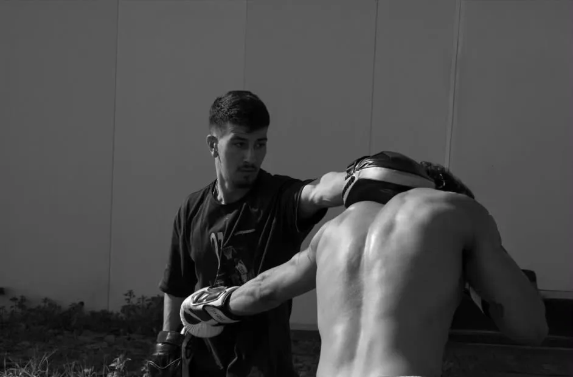
סהר שמש · מעל 12 שנות ניסיון בלחימה, קאליסטניקס וליווי מתאמנים.
כמה דקות שמכניסות את הדופק ואת הראש למצב אימון.
כל אחד עובד לפי הרמה שלו — עד לעמידת הידיים ועליית הכוח הראשונות שלך.
כוח מתפרץ · זריזות · קואורדינציה · גמישות · סיבולת לב-ריאה
ארגז הכלים שיעזור לך להיות מוכן יותר לכל סיטואציה ברחוב.
כמה דקות שמכניסות את הדופק ואת הראש למצב אימון.
כל אחד עובד לפי הרמה שלו — עד לעמידת הידיים ועליית הכוח הראשונות שלך.
כוח מתפרץ · זריזות · קואורדינציה · גמישות · סיבולת לב-ריאה
ארגז הכלים שיעזור לך להיות מוכן יותר לכל סיטואציה ברחוב.
האפליקציה שפיתחתי במיוחד עבור המתאמנים שלי מלווה אותך גם בין האימונים.
מבינה מה הרמה, המטרות והציוד שעומד לרשותך — ומתאימה תוכנית במיוחד בשבילך.
אתה מדווח בסוף כל סט — והתוכנית מתאימה את עצמה לקצב שלך.
תזונה, הרגלים, יסודות מואי תאי ועוד — הכל בתוך האפליקציה.
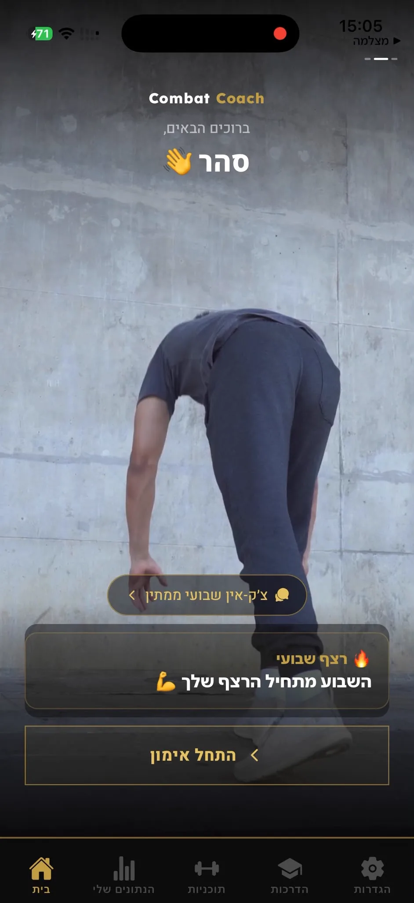
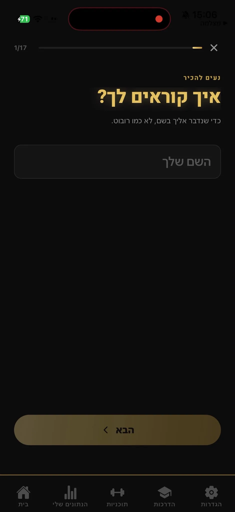
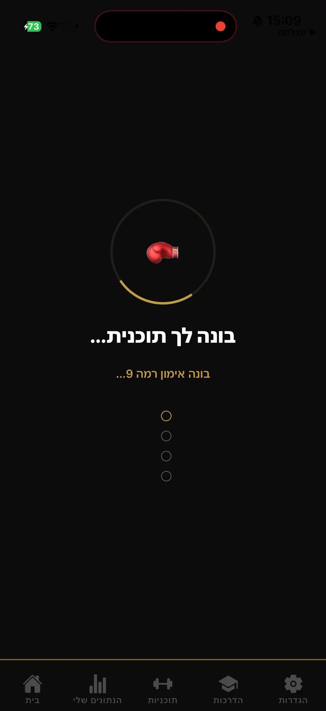
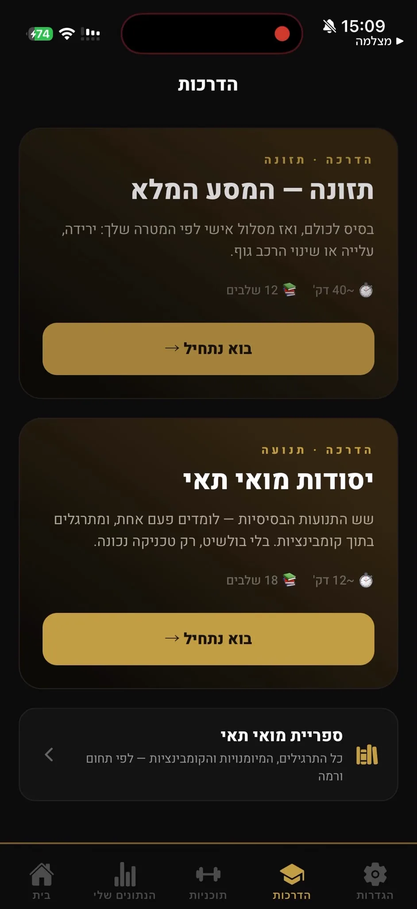
מה מספרים המתאמנים
לחץ על כרטיס כדי לראות את ההודעה שהם שלחו
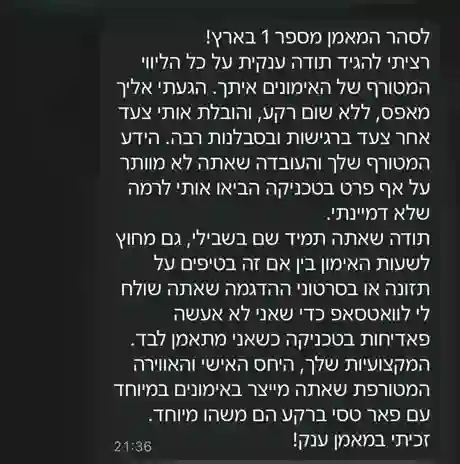
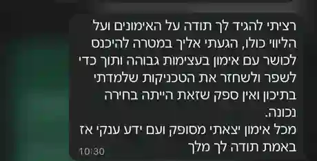
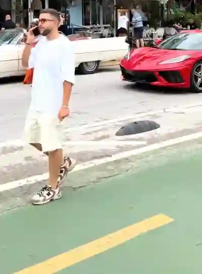
וידאו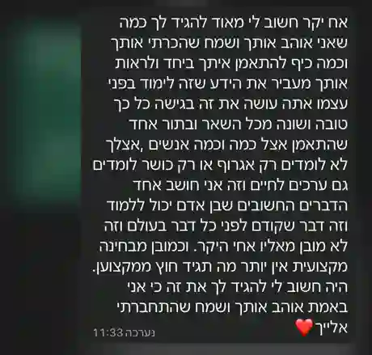
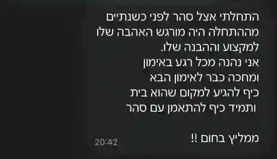
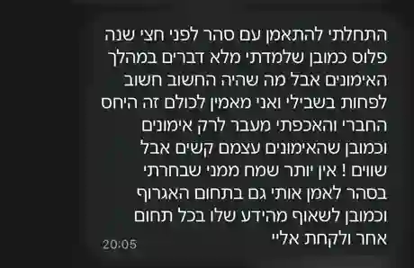
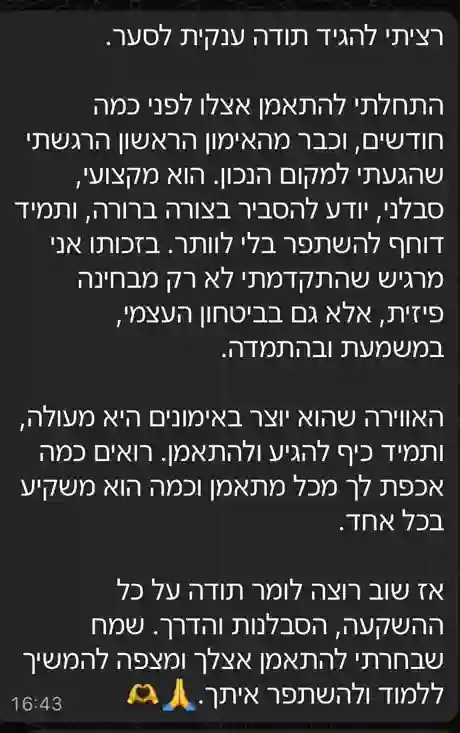
‹ גלול לצדדים — יש עוד הרבה ›
על מה מדברים במפגשים?
כל נושא הוא הרצאה שלמה — למטה מחכה לך טעימה מכל אחד.
אחת לשבוע ניפגש למפגשי קהילה ונפתח גם את הראש ולא רק את הגוף.
01 · ההבדל בין הצלחה חיצונית להצלחה פנימית.
לפעמים הדרך אל האושר לא מהנה, וההנאות מרחיקות אותנו מהאושר.
לזהות את הקולות הפנימיים וללמוד לנהל אותם.
לכתוב קוד ולבנות דברים אמיתיים בעזרת AI.
להבין ולבנות סוכנים שעושים עבודה בשבילך.
כל מתאמן בונה פרויקט משלו, צעד-צעד.
אחת לשבוע ניפגש למפגשי קהילה ונפתח גם את הראש ולא רק את הגוף.
גלול מטה — ונסה לגעת בכל דבר ↓
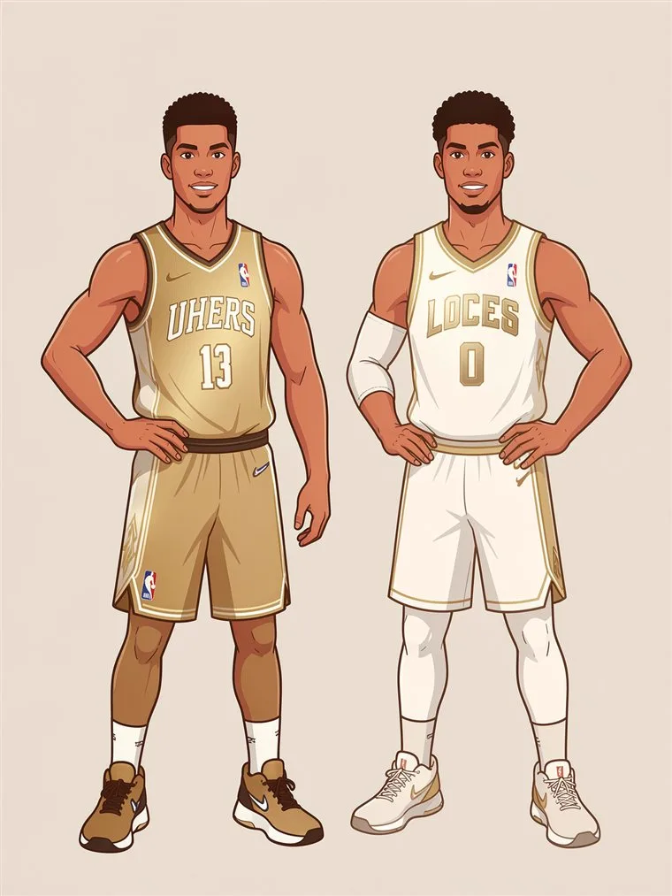
אנחנו נוטים להגדיר הצלחה דרך נתונים חיצוניים, והתבוננות קטנה יכולה לעזור לנו לגלות שזו לא בהכרח האמת.
אותו דופמין. עולם אחר.
הדופמין הוא הורמון התגמול, בכל פעם שאני חושב על משהו שהמוח מזהה כחיוני אז הוא מפריש דופמין שמעורר בי חשק ודוחף אותי להשיג אותו.
ניקח לדוגמה אמא שרוצה שהבן שלה יסדר את החדר, כדי שהוא יבצע את המשימה אז היא נותנת לו צ'ופר חצי שעה ערב סרט, ככה הדופמין פועל בגוף כדי שנבצע משימות חיוניות הוא מתגמל אותנו בהרגשה טובה לפי המעשה כדי שנבצע אותו.
אם נחזור אחורה בזמן לתקופה שבה כדי להשיג ארוחה טובה היינו צריכים לחדד את החנית לתת נשיקה בראש לאמא ולקוות שנחזור עם ארוחה, המטרה של הדופמין הייתה לדחוף אותנו לפעול כדי שלא נגווע ברעב.
אבל מאז המצב קצת השתנה ואנחנו יכולים להזמין וולט ובתקופה שלנו אנחנו מתמודדים עם אריות ונמרים מסוג שונה.
אריות ונמרים מסוג שונה.
דפוסי חשיבה שליליים שנוצרים אצלנו מילדות. אצל כל אחד מאיתנו מופיע לפחות חבלן ראשי וחבלן משני מהרשימה. גללו הצידה כדי לראות את כולם.
מ-0 למוצר, עם AI — טעימה מההדרכה
עונים על כמה שאלות, ואני בונה לך תוכנית מותאמת אישית וחוזר אליך. בלי התחייבות.
מעדיף רק להשאיר פרטים? לחץ כאן.
לא. האימונים והתוכנית באפליקציה מותאמים לרמה שלך, ואני מלווה אותך צעד-צעד. כל אחד מתחיל מאיפה שהוא נמצא.
התהליך בנוי לצעירים בגילאי 14-25. אם אתה לא בטוח שזה מתאים לך, תשלח לי הודעה ונבדוק ביחד.
מפגש הקהילה מתקיים במרכז הצעירים בבאר יעקב. את פרטי מיקום האימונים המדויקים נסגור יחד כשתמלא את השאלון.
אימון קבוצה של כשעה: חימום, קאליסטניקס, אתלטיות ואגרוף תאילנדי — כוח, שליטה בגוף וביטחון.
כן. גישה לאפליקציית קומבאט אתלט היא חלק מהתהליך — תוכנית אישית, מעקב ביצועים והדרכות.
לא בהכרח. התוכנית באפליקציה נבנית לפי הציוד שיש לך — גם אם זה רק משקל גוף.
קורה. האפליקציה שמה לב כשנעלמת, ועוזרת לך לחזור — בלי נאומים.
נעבור על מבנה התהליך והקצב יחד כשתמלא את השאלון — נתאים אותם לרמה ולמטרות שלך.
ממלאים את השאלון כאן בדף (הוא בונה לך תוכנית מותאמת אישית), ואני חוזר אליך עם כל הפרטים.